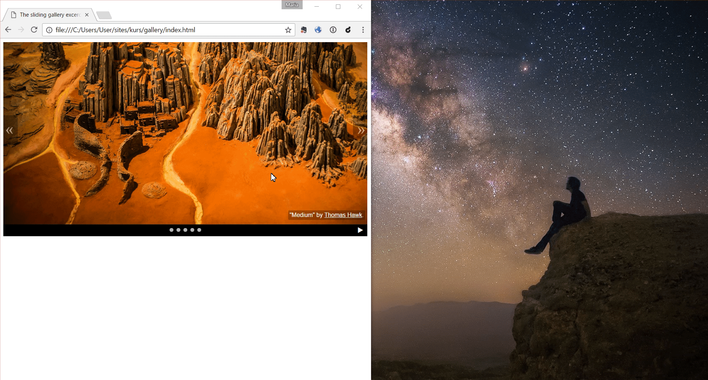
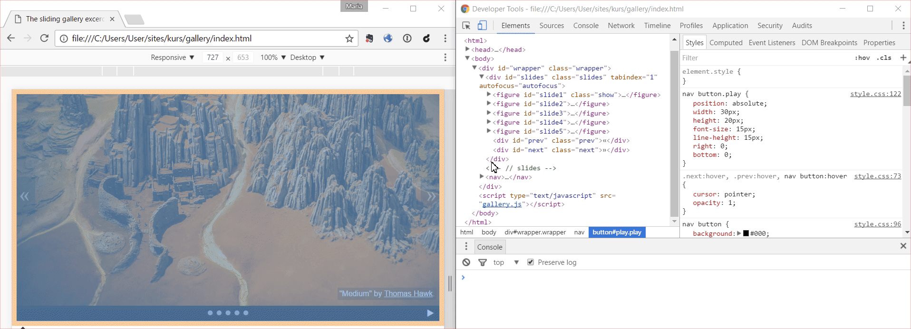
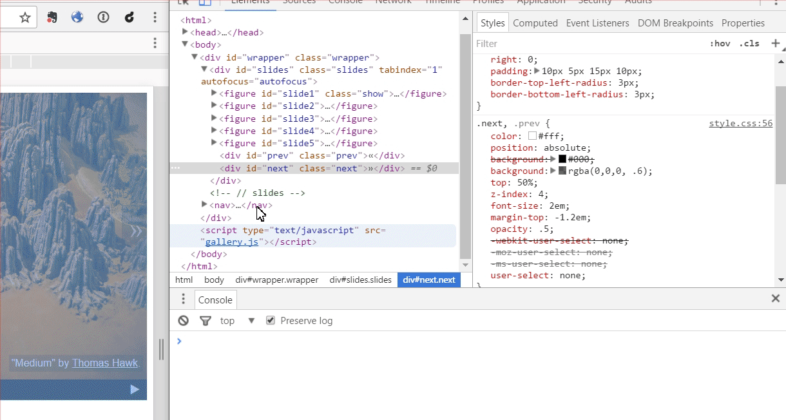
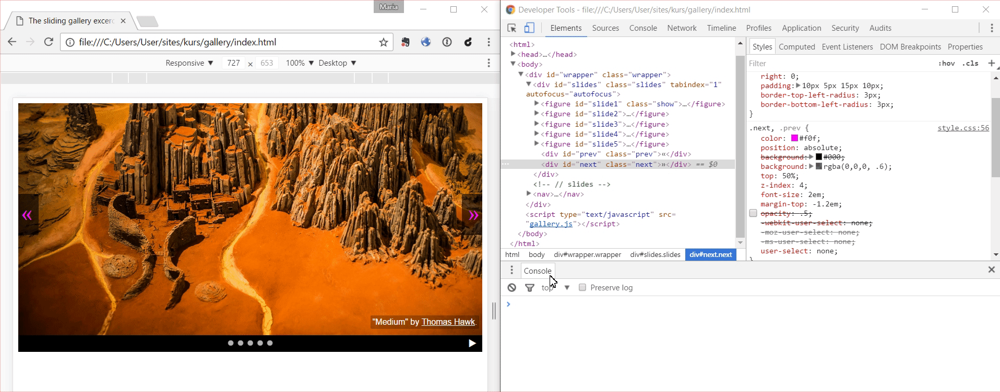
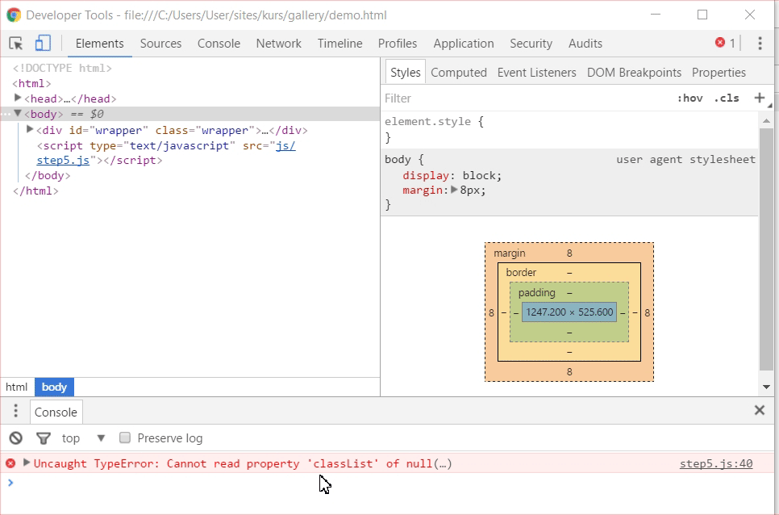

Вітаю!
(Натисніть пробіл, щоб продовжити)
Сьогодні ми дізнаємося, як створити інтерактивну галерею зображень за допомогою JavaScript.
Структура і зовнішній вигляд галереї (HTML та CSS) тепер готові.
(Натисніть тут, щоб переглянути)
Наше завдання буде відновити його, додавши код JavaScript.
До речі, красиві слайди, чи не так? :-) Якщо ви загубилися будь-де в процесі, натисніть ESCщоб побачити повний перегляд. Чи знаєте ви, що всі анімації та переходи між ними закодовані в JavaScript?
Зелені питання будуть підніматися для обговорення у групах.
Синій позначає важливу інформацію, яка допоможе нам у вирішенні завдань .
На пурпурі відзначені завдання для спільного виконання.
Наш інструктор (и) буде постійно стежити за нами і будемо раді відповісти на будь-які питання, які ви можете мати.
Натиснувши значок запитання у верхньому правому кутку, ви знайдете завантаження з усіма термінами, використаними на цьому курсі.
Чи готові? Тоді ми починаємо!
Робоче середовище
- Текстовий редактор - до написання нашего коду. Якщо у вас немає улюбленого, можна встановити Brackets (також працює на основі JavaScript!)
- Інтернет-браузер - у вас напевно є улюблений. Якщо у вас його немає, рекомендуємо Chrome.
- інструменти для розробників - у вас вже є у вашому браузері! Натисніть F12 (Ctrl + Option + I на Macbooks), щоб з'ясувати.
Джерела
Звідси ви завантажите пакет з вихідним кодом
Після вилучення ви знайдете два файли HTML у головній папці - наприклад, файл index.html
- файл demo.html, який ми працюємо.
Розпакуйте наші джерела та відкрийте файл demo.html у своєму веб-переглядачі.
Останній ефект складається з трьох шарів:
Структура документа
Які елементи відображаються на сторінці?
Картинки, текст, абзаци, заголовки, іконки тощо.
HTML відповідає за все.
Презентація
Які різні елементи?
Розмір, форма, колір, тип шрифту, положення відносно інших елементів - на ці питання відповідають CSS.
Взаємодія з користувачем
Що відбувається на сайті?
Яка взаємодія з користувачем? Що буде тоді? - Для цього потрібен JavaScript, і це ми зробимо в одну мить.
Тепер перейдіть до файла index.html у своєму веб-переглядачі.
З якіх елементів складается нашої галереї? Як ми можемо знати, як вони побудовані?
Інструменти розробника!
Майже кожен веб-браузер має дуже просунуті інструменти, які допоможуть нам зрозуміти, що саме сторінка містить і як вона працює.
Можливість перегляду дозволяє нам переглядати деталі.
Подствідлення вибраннего елементу
Класи, стилі та вміння їх змінювати
Консоль JavaScript
Час для експериментів! Використовуючи ці інструменти, давайте спробуємо взяти клас
show з елемента, який його зараз має, і додати його до іншого зображення.
Вийшло? Клас show показує додаткові стилі CSS, тому елемент із цим класом відображається поверх інших.
Якщо вам цікаво, як це буде зроблено, наш інструктор (и) буде радий пояснити це більш точно.
Нашим завданням буде знайти спосіб переключити цей клас за допомогою коду і тим самим автоматично змінювати слайди.
Як комп'ютер знає, що робити?
Напишіть інструкції, необхідні для показу слайда 5.
Ймовірно, виглядає приблизно так:
1. Знайдіть слайд 5 у документі.
2. Додайте йому клас `show`Нам потрібен об'єкт документа, щоб знайти елементи у document.
Відкрийте інструменти розробника, введіть слово
в document консолі і подивіться, що станеться.
Об'єкт document містить всю структуру HTML-файлу. Завдяки цьому
ми можемо знайти будь-який елемент документа та змінити його за допомогою коду.
Цікаво, як це працює - читати далі: Що таке DOM? - на трюках CSS
Об'єкт document має ряд metod маніпулювання елементами сторінки. На цьому етапі
ми будемо знати одну з них:
querySelector( стан ) - вибирає перший елемент, який відповідає умовам.
Якщо ви знаєте CSS, це чудово. Інвертори в цьому випадку працюють однаково, наприклад:
// вибирає перший 3-рівневий заголовок
document.querySelector( 'h3' )
// вибирає першу статтю
document.querySelector( 'article' )
// вибирає перший елемент з класу my-class
document.querySelector( '.my-class' )
// вибирає елемент з ID article-1
document.querySelector( '#article-1' ) Якщо ви не знаєте CSS, нічого не втрачається. У інструменті розробника натисніть праву кнопку Копіювати > Копіювати селектор.
Давайте відкриємо консоль, і на підставі прикладів з попереднього слайда напишіть код, який знайде нам слайд 5.
document.querySelector( '#slide5' )Що ми повернули, це елемент дерева документів. Ми хочемо тепер знайти методи, які дозволять вам додавати чи видаляти клас CSS.
Для цього ви зможете:
classList.add( class-name )- додає клас з даним ім'ям,classList.remove( class-name )- приймає клас з елемента.
Давайте покладемо в консоль код, необхідний для показу слайдера 5 - ми шукаємо його за допомогою
параметра querySelector, потім ми називаємо це методом classList.add з ім'ям класу (у цьому випадку show).
Пільнуймо, щоб велиина букв була відповідна і закінчуємо команду цим символом - ";"
Чи готові?
document.querySelector( '#slide5' ).classList.add( 'show' );Він працює? Тепер давайте зробимо те ж саме для слайду 4.
document.querySelector( '#slide4' ).classList.add( 'show' );Код для слайда 4 не працював, хоча він побудований практично так само, як і попередній. Будь-які ідеї, чому це сталося?
Потрібно приховати слайд 5, який охоплює решту.
Давайте писати в коді консолі, щоб зробити це.
document.querySelector( '#slide5' ).classList.remove( 'show' );Супер! Давайте копіюємо всі три фрагменти у наш файл gallery.js. Ми підготуємось до
програми навігації найближчим часом.
Унизу ми маємо 5 білих кнопок. Опраграмуєми кожен, щоб показати відповідний слайд.
Ми можемо подивитися на demo.html, щоб побачити, як воно повинно
виглядати.
Давайте розглянемо і пишемо по-польськи, як написати наступний алгоритм: коли хтось натискає кнопку 5 миші, покажіть слайда з цим номером.
Чи готові?
Напевно, ми маємо щось на зразок цього:
1. Знайдіть п'яту кнопку.
2. Перевірте, коли він натиснув.
3. Коли натиснете кнопку, виконайте дію:
3.1. Сховати поточний слайд.
3.2. Покажіть п'ятий слайд.Цього разу ми почнемо з кінця. Останні дві інструкції повинні працювати разом, тому нам потрібно знайти спосіб зв'язати їх разом.
Для цього нам потрібні функції.
Функція це послідовність декількох команд, які утворюють логічне ціле і повинні виконуватись один за одним.
У JavaScript ми можемо будувати функції кількома різними способами, найпростішими з яких є:
function myFunction( ) {
/* вміст функції */
}У файлі gallery.js створіть функцію з ім'ям showSlide5.
Всередині функції (в тілі функції) додайте код, який показує п'ятий слайд (як це було на попередньому кроці).
function showSlide5( ) {
document.querySelector( '#slide5' ).classList.add( 'show' );
}У нас є перша функція! Тепер ми хочемо зв'язати її з кнопкою №5, щоб ця функція виконувалась кожного разу, коли хтось натискає на кнопку.
Пам'ятаєте, як нам вдалося знайти певний слайд на попередньому етапі? Як ми можемо зробити те ж саме зараз за допомогою кнопки?
document.querySelector( '#pin5' )Тепер нам потрібен якусь мутоду, яка дозволить нам пов'язувати нашу функцію з натисканням на цей елемент.
Всі елементи документа мають цей метод і це:
addEventListener( подія, action-to-execute )- виконує вказану дію, коли щось стає конкретним.
Подія може бути будь-чим, що відбувається на сторінці: те, що користувач робить (натискання, переміщення мишки над елементом, натискання клавіші, збільшення вікна, прокручування тощо) та речі, які відбуваються автоматично, наприклад завантаження сторінки.
У такому випадку нам потрібна подію типу 'click', яка відповідає за натискання елемента.
У файлі gallery.js ви вже маєте код для кнопки 5. Використовуючи
метод addEventListener натисніть цю кнопку (подія клацання - 'click') за допомогою функції
showSlide5, написаної раніше.
document.querySelector( '#pin5' ).addEventListener( 'click', showSlide5 );Що зараз? Ми оновлюємо сторінку і дізнаємося, чи вона працює ;-)
У нас вже є код, який показує слайд 5. Тепер, перш ніж ми покажемо це, було б корисно знайти поточний слайд і сховати його.
Як ми можемо знайти поточний слайд? Чи є щось, що відрізняє його від інших?
Поточний слайд, на відміну від інших, має доданий клас show.
Коли ми додаємо період до імені класу, ми отримуємо селектор, який дозволяє шукати його. Використовуючи
ці знання та попередні приклади, додайте код на початку showSlide5, який знайде
поточний слайд та приховує його.
Коли ви збережете поточний слайд, ви побачите таке:
function showSlide5( ) {
document.querySelector( '.show' ).classList.remove( 'show' );
document.querySelector( '#slide5' ).classList.add( 'show' );
}
document.querySelector( '#pin5' ).addEventListener( 'click', showSlide5 );Він працює? Тепер ми можемо створити код для інших слайдів і кнопок. Найпростіший спосіб - скопіювати-вставити метод-змінити те, що вам потрібно :-)
Час для тестів!
Що потрібно перевірити, щоб переконатися, що все добре?
Попередня / наступна навігація
Наступним кроком є програмування стрілок вправо та вліво, які перемістять вас до наступного / попереднього зображення.
Традиційно, почнемо з написання українською мовою, що нам потрібно зробити,
щоб отримати наступний слайд, після натискання кнопки >>.
Є кілька способів зберегти його. Ось приклад:
1. Знайдіть стрілку праворуч -> ,
2. Перевірте, коли вона натиснута.
3. Коли ви натискаєте то відбуваються наступні дії:
3.1. Знайдіть слайд, який в даний час призначений для класу `show`,
3.2. Забери від слайда цей клас (видали),
3.3. Знайдіть наступний елемент у порядку,
3.4. Додайте його до класу `show`.Якщо ваш метод дуже відрізняється від прикладу, інструктор буде радий вам повідомити, що робити далі.
Багато хто з цих чи подібних інструкцій вже обговорювалися:
- 1. Знайдіть стрілку праворуч,
- 2. Перевірте, коли він натиснув.
- 3. Коли ви натискаєте подію:
-
- 3.1. Знайдіть слайд, в якому наразі є призначений клас
show, - 3.2. Забери від слайда цей клас (видали),
- 3.3. Знайдіть наступний елемент у порядку.
- 3.4. Додати його
show.
- 3.1. Знайдіть слайд, в якому наразі є призначений клас
У вас є сумніви щодо того, як зробити одну з висвітлених речей? Тепер настав час пояснити це.
Використовуючи те, що ми вже знаємо, у файлі gallery.js створіть функцію
showNextSlide і додайте поточний елемент до нього.
Рішення:
function showNextSlide( ) {
document.querySelector( '.show' ).classList.remove( 'show' );
// тут буде інший наш код
}
document.querySelector( '#next' ).addEventListener( 'click', showNextSlide );Давайте подивимося, як це працює!
Найважча частина на цьому етапі - знайти наступний елемент у порядку. Які наші ідеї про те, як це зробити?
Ми повинні де-небудь пам'ятати, який слайд був останній раз відображений, і на цій основі, щоб обчислити, який з них буде наступним.
Для цього потрібні змінні.
Змінна це контейнер, в якому ми можемо зберігати інформацію та читати її пізніше в іншому місці. У JavaScript кожна змінна може зберігати практично будь-що - текст, номер, елемент документа, складний об'єкт і навіть функція.
Для створення змінної в JavaScript ми використовуємо ключове слово let:
// текстова змінна
let courseTitle = 'Galeria JavaScript';Тоді ми можемо використовувати змінну, створену в коді, просто вказавши її ім'я, наприклад:
// числова змінна - довжина тексту
let titleLength = courseTitle.length;Як ми вже згадували, змінна може зберігати все. Давайте розглянемо, в якому вигляді найпростіший спосіб запам'ятовувати поточний слайд, а потім обчислити наступний на ньому.
Найлегше запам'ятати номер поточного елемента. Це дозволить нам позначити наступний / попередній елемент шляхом додавання та віднімання.
Давайте спробуємо уточнити наш алгоритм стрілкою праворуч, знаючи, що ми будемо читати і писати номер поточного елемента.
Це виглядає так:
1. Знайдіть стрілку праворуч,
2. Перевірте, коли він натиснув.
3. Коли ви натискаєте подію:
3.1. Знайдіть слайд, який в даний час призначений для класу `show`,
3.2. Візьміть його до цього класу, // до цих пір без змін
3.3. Прочитайте номер поточного елемента, збереженого в змінній,
3.4. Додати до неї `1`,
3.5. Знайти елемент з новим номером,
3.6. Додайте його до класу `show`.
3.7. Зберегти новий номер як поточний елемент.Все зрозуміло? Настав час задавати питання, перш ніж перейти.
Як ми можемо прочитати поточний номер на кроці 3.3?
Ми повинні зберегти його раніше, ніж функція, бажано на початку файлу.
Яку цінність ми хочемо надати йому на початку?
Коли сторінка завантажується, з'являється перший слайд, тому спочатку поточний номер повинен бути 1.
Як тільки ми знаємо, що робити, давайте застосувати його до практики зараз. На початку файлу
gallery.js створіть змінну з ім'ям currentNumber і призначимо йому значення
1.
let currentNumber = 1;Відмінно, ми маємо нашу першу змінну!
Тепер ми хочемо додати до нього 1 і запам'ятати цю цінність. Для цього ми можемо створити додаткову змінну для довідки.
Наприкінці функції showNextSlide створіть нову змінну з назвою newNumber,
і призначимо значення 1 більше, ніж currentNumber.
let newNumber = currentNumber + 1;Дуже добре. Тепер, коли ми розрахували новий номер, нам потрібно знайти елемент із цим номером.
Всі наші слайди мають ідентифікатор #slide + послідовного номера (1, 2, 3, ...).
Таким чином, ми можемо використовувати силу JavaScript і клонувати текст з номером,
використовуючи той самий знак +, наприклад:
'#slide' + 1Використовуючи це властивість, давайте завершимо в кінці функції showNextSlide
код, який знаходить елемент з номером newNumber і додає йому клас show.
document.querySelector( '#slide' + newNumber ).classList.add( 'show' );Була ще одна річ - зберегти новий номер поточним.
В кінці функції showNextSlide ми зберігаємо новий поточний номер слайда в
currentNumber. (Вона в даний час зберігається в newNumber).
Якщо все відбувається відповідно до плану, наш код має виглядати приблизно так:
let currentNumber = 1;
function showNextSlide( ) {
document.querySelector( '.show' ).classList.remove( 'show' );
let newNumber = currentNumber + 1;
document.querySelector( '#slide' + newNumber ).classList.add( 'show' );
currentNumber = newNumber;
}
document.querySelector( '#next' ).addEventListener( 'click', showNextSlide );Все готово? Час для тестів! :-)
Ви помітили це? Коли ми дійдемо до кінця, ми отримуємо чорний екран.
Чому це відбувається і як ми можемо це виправити?
У нас є лише 5 слайдів, тому після закінчення сценарій намагається завантажити нам слайд 6, який не існує.
Щоб це виправити, ми можемо перевірити після додавання поточного номера. Якщо він більше 5, тоді потрібно змінити його на 1.
Як ми можемо вдосконалити наш алгоритм, написаний українською мовою, щоб включити його?
3.1. Знайдіть слайд, який в даний час призначений для класу `show`,
3.2. Забери від слайда цей клас (видали),
3.3. Прочитайте номер поточного елемента, збереженого в змінній,
3.4. Додати до нього 1,
3.5. Якщо новий номер більше 5, змініть його на 1.
3.6. Знайти елемент з новим номером,
3.7. Додайте його до класу `show`.
3.8. Зберегти новий номер як поточний елемент.Щоб досягти цього ефекту, нам знадобляться умовні інструкції.
Умовні висловлювання фрагменти коду, які виконуються лише тоді, коли умова виконується.
Найпростіший з них виглядає так:
if ( умова ) {
// виконує код, який знаходиться тут.
}Для порівняння, яке число більше або менше, ми використовуємо символи >
і <.
Якщо щось незрозуміло, зараз чудово підходить для запитання.
У належному місці функції showNextSlide ми додаємо умовне твердження,
яке перевіряє на newNumber від 5, і, якщо це так, присвоює значення 1.
Наступний етап нашого коду:
let currentNumber = 1;
function showNextSlide( ) {
document.querySelector( '.show' ).classList.remove( 'show' );
let newNumber = currentNumber + 1;
if( newNumber > 5 ) {
newNumber = 1;
}
document.querySelector( '#slide' + newNumber ).classList.add( 'show' );
currentNumber = newNumber;
}
document.querySelector( '#next' ).addEventListener( 'click', showNextSlide );Часи на випробуванні!
Якщо все працює так, як треба, ми можемо створити і пов'язувати аналогічну
функцію для лівої стрілки. Давайте назвати це showPreviousSlide. Більшість кодів,
котрі ми можемо скопіювати з функції для стрілки праворуч, нам просто потрібно змінити додавання
до віднімання, а також умови досягнення кінця. Після закінчення роботи давайте перевіримо, як це працює.
Приклад коду для функції showPreviousSlide:
function showPreviousSlide( ) {
document.querySelector( '.show' ).classList.remove( 'show' );
let newNumber = currentNumber - 1;
if( newNumber < 1 ) {
newNumber = 5;
}
document.querySelector( '#slide' + newNumber ).classList.add( 'show' );
currentNumber = newNumber;
}
document.querySelector( '#prev' ).addEventListener( 'click', showPreviousSlide );Вийшло! Маємо вже запрограмовані основні функції галереї.
Ти хочеш ще? Є ще певні бонуси для бажаючих.
Бонус 1 - поєднувати весь час
Є два способи навігації по галереї - кнопки внизу та стрілки. Настав час подивитися, як працює співпраця.
Якщо ми використовуємо кнопки та стріли, порядок зображень не зовсім правий. Що не так? Будь-які ідеї, чому це відбувається?
Функції showNextSlide та showPreviousSlide зчитують
з currentNumber поточний номер слайда, а потім вибирають наступний.
На жаль, функції, призначені кнопкам (showSlide1 ... showSlide5)
не оновлюють це значення, тому наш код містить погані дані про те,
який слайд зараз знаходиться на верху.
Ура! У нас є наш перший побічний ефект ;-) Такі речі часто трапляються при додаванні нової функціональності до старого коду. Щоб запобігти цьому, корисно тестувати та спростити код, наскільки це можливо.
Як ми можемо вирішити нашу проблему і запобігти подібним ситуаціям у майбутньому?
Найпростішим рішенням буде збереження поточного значення currentNumber у всіх функціях,
призначених для кнопок.
Таким чином, кожен з функцій showSlide1 ... showSlide5 буде записувати
відповідний номер від 1 до 5.
На жаль, це рішення має серйозний недолік. Кожного разу, коли ми змінюємо щось у нашому коді, нам потрібно перевірити всі існуючі функції та переконатися, що вони все ще актуальні. Якщо ні, вам доведеться покращувати кожен індивідуально.
Набагато кращим рішенням буде створення універсальної функції, яка покаже будь-який слайд з заданим номером. Це дозволить логіці слайд-шоу завжди бути однаковими, і будь-які зміни, які потрібно внести лише один раз.
Для цього нам знадобляться параметри функції.
Як ви, напевно, пам'ятаєте, функція - це послідовна послідовність команд, які можна викликати з будь-якої точки коду, щоб вони виконувалися один за іншим. Якщо ми передаємо параметри до функції, однакові команди завжди можуть працювати на інших даних.
Простий приклад - функція, яка приймає ім'я як параметр і записує в консолі привітання для людини з певним ім'ям:
function hi( name ) {
console.log( 'Гей ' + name + '! Приємно бачити вас!' );
}Тепер ми можемо назвати цю функцію, наприклад::
hi( 'Магда' );Що станеться, якщо ми запустимо функцію hi таким чином?
Кінець відступу, ми повертаємося до нашого слайд-шоу :-)
Виходячи з вже написаних нами функцій, давайте розглянемо, що є загальними частинами. Як ми можемо спасти польську мову, яку універсальну функцію слід зробити?
1. Для даного номера слайда
1.1. Знайдіть поточний елемент,
1.2. Візьміть його клас `show`,
1.3. Знайти елемент із зазначеним номером,
1.4. Додайте його до класу `show`,
1.5. Зберегти вказаний номер як поточний номер слайда.Якщо у вас виникли сумніви, зараз чудово провести час.
У файлі gallery.js додайте нову функцію showSlide, яка
приймає номер слайда для показу (newNumber) як параметр. Включіть всі необхідні
інструкції в тіло функції: приховати поточний слайд, знайти слайд з новим номером і показати його,
зберегти поточний номер.
Приклад коду, як це зробити:
function showSlide( newNumber ) {
document.querySelector( '.show' ).classList.remove( 'show' );
document.querySelector( '#slide' + newNumber ).classList.add( 'show' );
currentNumber = newNumber;
}Що далі? Нам потрібно змінити ті функції, які ми вже маємо для того, щоб використовувати цей універсальний.
У файлі gallery.js знайдіть функції showSlide1 для showSlide5.
Перевизначити їх поточний вміст за допомогою універсального дзвінка для showSlide
з відповідним параметром.
Код для кнопки 1 - інші виглядають однаково:
function showSlide1( ) {
showSlide( 1 );
}
document.querySelector( '#pin1' ).addEventListener( 'click', showSlide1 );Тепер давайте зробимо те саме для стріл.
У файлі gallery.js знайдіть функції showPreviousSlide
та showNextSlide. Видаліть все з універсальної функції showSlide
і зателефонуйте цій функції за допомогою відповідного параметра.
Код для стрілки праворуч після зміни:
function showNextSlide( ) {
let newNumber = currentNumber + 1;
if( newNumber > 5 ) {
newNumber = 1;
}
showSlide( newNumber );
}
document.querySelector( '#next' ).addEventListener( 'click', showNextSlide );Все зрозуміло? Час для тестів!
Гарна робота!
І гарні новини - більше бонусів!
Бонус 2 - виділення кнопок
Наступна класна річ, яку варто було б зробити, це виділення кнопки, яка відповідає поточному знімку.
Ми бачимо, як це виглядає на нашій демонстрації.
Як поточна кнопка висвічується на демонстраційному сайті? Що говорять нам інструменти програміста?
Ми бачимо, що в поточній виділеній кнопці є додатковий selected клас.
Дотримуючись функції showSlide, додайте нову функцію selectPin в файл
gallery.js яка знімає номер кнопки, щоб виділити її як параметр,
скидає поточну виділену кнопку та виділяє його з вказаним номером.
Чи готові? Ось приклад того, як може виглядати ця функція:
function selectPin( newNumber ) {
document.querySelector( '.selected' ).classList.remove( 'selected' );
document.querySelector( '#pin' + newNumber ).classList.add( 'selected' );
}Де найкраще буде називати цю функцію? Чому ми не
зберігаємо поточне значення цього номера currentNumber?
Ми хочемо підкреслити кнопку кожного разу, коли ми перемикаємо слайди, тому найкраще викликати
цю функцію всередині функції showSlide.
Номер підсвіченої кнопки завжди збігається з номером показаного слайда, тому нам не потрібно повторно пам'ятати те саме значення.
Всередині функції showSlide додати кнопку виділення - викликати функцію
selectPin з відповідним параметром.
Наша функція showSlide тепер має форму:
function showSlide( newNumber ) {
document.querySelector( '.show' ).classList.remove( 'show' );
document.querySelector( '#slide' + newNumber ).classList.add( 'show' );
currentNumber = newNumber;
selectPin( newNumber );
}Традиційно - ми тестуємо! :-)
На жаль, щось не так! Будь-які ідеї, що сталося, і як ми можемо це виправити?
Консоль браузера допоможе. Натискаючи ім'я файлу в повідомленні про помилку, ми можемо побачити, яка саме частина нашого коду викликає проблеми:
Ми бачимо, що наш скрипт має проблеми з властивістю classList, оскільки об'єкт, який він намагається
читати, просто не існує.
Чому це сталося? Коли сторінка запускається, жодна з кнопок не має класу
selected, тому пошук за цим класом повернув порожній набір.
Як ми можемо вирішити цю проблему?
Переконайтеся, що при завантаженні сторінки перший слайд правильно відображається,
а перша кнопка виділена. Для цього додайте код, який зробить це навколо початку файлу gallery.js.
Тут ми маємо приклад того, як це вирішити:
let currentNumber = 1;
document.querySelector( '#slide' + currentNumber ).classList.add( 'show' );
document.querySelector( '#pin' + currentNumber ).classList.add( 'selected' );Як тести вийшли на цей раз?
Якщо вас недостатньо, тоді ми запрошуємо вас після перерви :-)
Бонус 3 - петлі
Бонус 3 - петлі
Бонус 3 - петлі
Бонус 3 - петлі
Що робити так, щоб ти не повторював себе без почуття?
У нашому коді зараз є п'ять, дуже схожі на один одного шматки коду
function showSlide1 ( ) {
showSlide( 1 );
}
document.querySelector('#pin1').addEventListener( 'click', showSlide1 );function showSlide2 ( ) {
showSlide( 2 );
}
document.querySelector('#pin1').addEventListener( 'click', showSlide2 );...
Уявіть собі, як виглядатиме наш код, якщо у нашій галереї було більше п'яти фотографій
function showSlide312 ( ) {
showSlide( 312 );
}
document.querySelector('#pin312').addEventListener( 'click', showSlide312 );Це просить як-то автоматизувати цей процес.
Зрештою, є комп'ютери, які полегшують нам життя! ;-)
Уявіть щось на кшталт:
Підставляючи під змінною numerPinu лічби від 1 до 5 і хочу виконати наступну дію: {
document
.querySelector('#pin' + pinNumber)
.addEventListener( 'click', showSlide(pinNumber) );
}У JavaScript ми можемо розбивати довгі інструкції на кілька рядків для кращої читабельності.
Як виявляється, це дуже просто!
Ми будемо використовувати це для петл for:
for (let pinNumber = 1; pinNumber <= 5; pinNumber++) {
document
.querySelector('#pin' + pinNumber)
.addEventListener( 'click', showSlide(pinNumber) );
}Давайте перевіримо це!
Я думаю щось не так :(
Відразу ж ми показуємо останню фотографію, а шпильки не працюють...
Давайте знову подивимося на наш цикл:
for (let pinNumber = 1; pinNumber <= 5; pinNumber++) {
document
.querySelector('#pin' + pinNumber)
.addEventListener( 'click', showSlide(pinNumber) );
}Проблемою є функція showSlide(), яка викликається, коли цикл виконується,
а не після натискання на контактний
Нагадаю, як виглядав наш оригінальний код
function showSlide1 ( ) {
showSlide( 1 );
}
document.querySelector('#pin1').addEventListener( 'click', showSlide1 );Виклик функції showSlide був закритий у функції showSlide1,
що дозволило нам викликати це в потрібний момент (тобто після натискання)
Цей код:
function showSlide1 ( ) {
showSlide( 1 );
}
document.querySelector('#pin1').addEventListener( 'click', showSlide1 );Ви можете економити трохи по-іншому
document.querySelector('#pin1').addEventListener( 'click', function () {
showSlide( 1 );
} );Ми перемістили визначення функції безпосередньо до місця, де ми хочемо присвоїти його події слухача
Крім того, ми взяли її ім'я. Тепер це анонімна функція!
Тепер давайте повернемося до нашої петлі. З нововиявленими знаннями ми маємо справу з правильним написанням
for (let pinNumber = 1; pinNumber <= 5; pinNumber++) {
document
.querySelector('#pin' + pinNumber)
.addEventListener( 'click', function () {
showSlide(pinNumber);
});
}Ну, давайте подивимося, як це вийшло
Шпильки працюють, і у нас (+ -) в п'ять разів менше коду!

Бонус 4 - автозапуск!
Цього разу давайте спробуємо додати режим автозапуску до нашого слайд-шоу.
Традиційно, ми можемо побачити, як це працює на нашій демо, натиснувши кнопку у нижньому правому куті.
Цього разу ми не повинні брати до уваги все, що відбувається на сайті,
і давайте зможемо максимально наблизити картину ситуації. Ми бачимо, що автозапуск включається
і вимикається поперемінно, коли ми кілька разів натискаємо кнопку play. Як ми
можемо зберегти те, що відбувається тут, на самому загальному рівні?
Напевно щось подібне до нас сталося:
1. Знайди кнопку "плей",
2. Перевір коли ми в неї клікнемо.
3. Коли клікнемо, то будуть виконані подальші дії:
3.1. Перевір чи слайди показуютсья:
3.1.1. Йак так - то виключіть його
3.1.2. Йак ні - включіть.Настав час розпочати створення функції, яка буде керувати нашою слайд-шоу. Як ми можемо перевірити, чи показується слайд-шоу?
Так само, як ми пам'ятаємо номер поточного слайда, - використовуємо змінну.
У цьому випадку наша змінна матиме лише два значення (odtwarza się / nie odtwarza się), тому найкраще призначити логічне значення
Ви пам'ятаєте, що в JavaScript, змінна може бути практично чимось? Серед іншого, ми можемо призначити логічне значення (prawda або fałsz).
Ми пишемо правду в JavaScript як істину true,
бо неправда ми використовуємо слово false:
let isJavaScriptAwesome = true;
let isJavaScriptComplicated = false;Ми порівнюємо логічні значення з використанням тривимірного знаку рівності, наприклад:
if ( isJavaScriptAwesome === true ) {
let doWeHaveEnoughYet = false;
}У початку файлу gallery.js створіть змінну playing,
яка зберігатиме поточний стан слайд-шоу. Спочатку шоу має бути вимкнено,
тому встановіть його на помилку.
let playing = false;Відмінно! Тепер ми можемо йти до скелету нашої функції. Давайте швидко подивимося на код, написаний в попередніх кроках, щоб нагадати вам, як пов'язати цю функцію за допомогою клацання мишкою на елементі.
У файлі gallery.js додайте нову функцію playButtonClicked
і зв'яжіть її одним натисканням кнопки відтворення (play). У тілі функції перевірте поточний стан
слайд-шоу, збереженого у змінній, playing. Наразі цього достатньо, щоб ви змінили його
на протилежне (від правди до помилкових, від неправдивих до правди).
Найімовірніше, ми отримаємо щось на зразок цього:
function playButtonClicked( ) {
if ( playing === true ) {
playing = false;
} else {
playing = true;
}
}
document.querySelector( '#play' ).addEventListener( 'click', playButtonClicked );Як ми можемо на цьому етапі перевірити, правильно чи працює наш код?
Найпростіший спосіб - ввести ім'я нашої змінної в консоль - ми повернемо його до поточного значення.
Давайте подивимось на кнопку play. Ми бачимо, що він змінює значок залежно від того, скільки разів було натиснуто. Що змінює цей значок?
Звичайно, це клас CSS. Цього разу його називають правильним класом on.
Ми бачимо, що кількість речей, які потрібно зробити, коли вмикання / вимикання слайд-шоу змінюється повільно. Може бути, вони віддадуть від них свої функції?
У файлі gallery.js додамо дві нові функції:
startSlideshow і stopSlideshow. Функція start додає клас on
до кнопки play та зберігає в змінній playing, що показує слайд-шоу.
Функція stop робить зворотне. Функція playButtonClicked викликає кожну з цих двох
функцій у потрібних місцях.
Багато нового коду! Давайте подивимося, як це відбулося цього разу:
function playButtonClicked( ) {
if ( playing === true ) {
stopSlideshow();
} else {
startSlideshow();
}
}
document.querySelector( '#play' ).addEventListener( 'click', playButtonClicked );
function startSlideshow( ) {
document.querySelector( '#play' ).classList.add( 'on' );
playing = true;
}
function stopSlideshow( ) {
document.querySelector( '#play' ).classList.remove( 'on' );
playing = false;
}Все тепер зрозуміло? Як ми тестуємо?
Якщо все добре, тоді ми йдемо в найважчу частину - перемикання слайд-шоу увімкнено та вимикається.
Що саме являє собою слайд-шоу? Як ми можемо зберегти його
алгоритм українською мовою? Частина, яку ми вже описали в функції startSlideshow,
тому ми повинні думати про решту.
Існує декілька способів збереження, але ідея більш-менш однакова:
Функція Увімкнення слайд-шоу:
1. Додайте клас playing до кнопки play
2. Записати стан слайд-шоу в змінній playing
3. Зачекайте 3 секунди,
4. Пересуньте слайдер до наступного,
5. Поверніться до кроку 3.На наступному етапі ми потребуємо певного способу вимірювання часу.
Інтервали корисні для цього.
Інтервал повторює вказівки, надані йому періодично в заданий проміжок часу.
Це може бути створене за допомогою функції:
setInterval( akcja, odstep )- виконує дію щоразу, коли заданий часовий інтервал проходить (дані в мілісекундах).
У функції startSlideshow створіть інтервал, який перемикає слайд
на наступний кожні 3000 мілісекунд. Пам'ятайте, що ми маємо функцію готового перемикання
слайда до наступного :-)
Після додавання нового коду функція представлена нам наступним чином:
function startSlideshow( ) {
document.querySelector( '#play' ).classList.add( 'on' );
playing = true;
setInterval( showNextSlide, 3000 );
}Що вони показують нам на цей раз?
Ми можемо бачити, що покази слайдів починаються правильно. Тепер нам потрібно якийсь спосіб його вимкнути.
Як ми можемо відключити проміжний інтервал один раз?
Це було досить не звикле питання. Як ми, напевно, пам'ятаємо, змінні в JavaScript можуть врятувати все.
Що станеться, якщо ми збережемо результат функції setInterval?
Ми можемо використати це пізніше, щоб вимкнути цей інтервал.
Біля початку файлу gallery.js створіть нову змінну з назвою
slideshowInterval. У правильному місці в коді збережіть результат функції
setInterval у цій змінній.
Цього разу ми повинні отримати щось подібне:
let slideshowInterval;
// (...)
function startSlideshow( ) {
document.querySelector( '#play' ).classList.add( 'on' );
playing = true;
slideshowInterval = setInterval( showNextSlide, 3000 );
}Тепер нам просто треба вимкнути інтервал.
З цією метою ця функція допоможе нам:
clearInterval( interval )- вимикає інтервал, попередньо збережений у заданій змінній.
Спробуємо використати це на практиці.
У функції stopSlideshow ми очистимо раніше збережений інтервал.
Для цього виклик функцію clearInterval з відповідним параметром.
Вся функція stopSlideshow тепер виглядає так:
function stopSlideshow( ) {
document.querySelector( '#play' ).classList.remove( 'on' );
playing = false;
clearInterval( slideshowInterval );
}Що тести говорять нам?
Вітаємо!
Це кінець нашого курсу. Ми зробили чудову роботу, але це лише початок мови JavaScript.
Ми збираємося ознайомити вас із цікавими проектами, побудованими на цій мові.
Але ви, напевно, вже замислювалися "що далі?".
Гарні новини: Інтернет наповнений безкоштовними матеріалами для самостійного вивчення JavaScript!
Кілька ідей, з чого почати::
Ми також рекомендуємо відвідати сторінку Facebook, де ми повідомимо вас про наступні курси.
Дякуємо за час, проведене разом і бачимо вас!
переклад: Руслан Халілов
 Та презентація доступна на
ліцензії Creative Commons Uznanie autorstwa-Użycie niekomercyjne-Na tych
samych warunkach 3.0 Polska
.
Та презентація доступна на
ліцензії Creative Commons Uznanie autorstwa-Użycie niekomercyjne-Na tych
samych warunkach 3.0 Polska
.